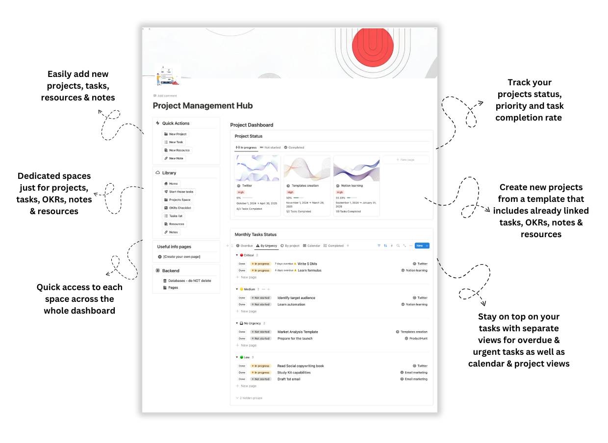
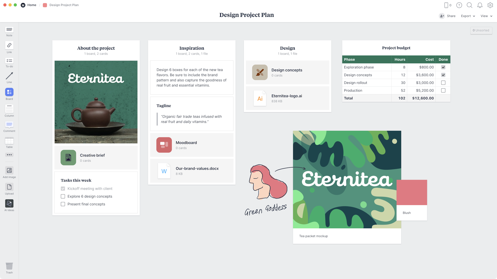
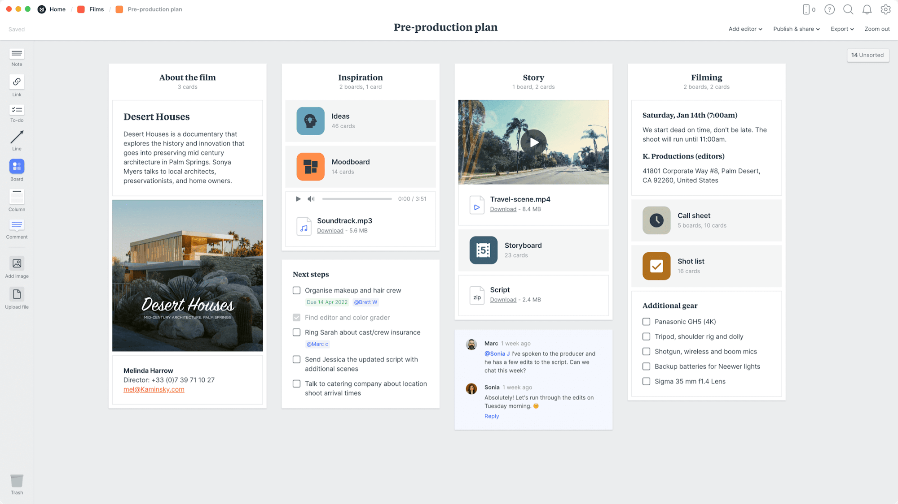
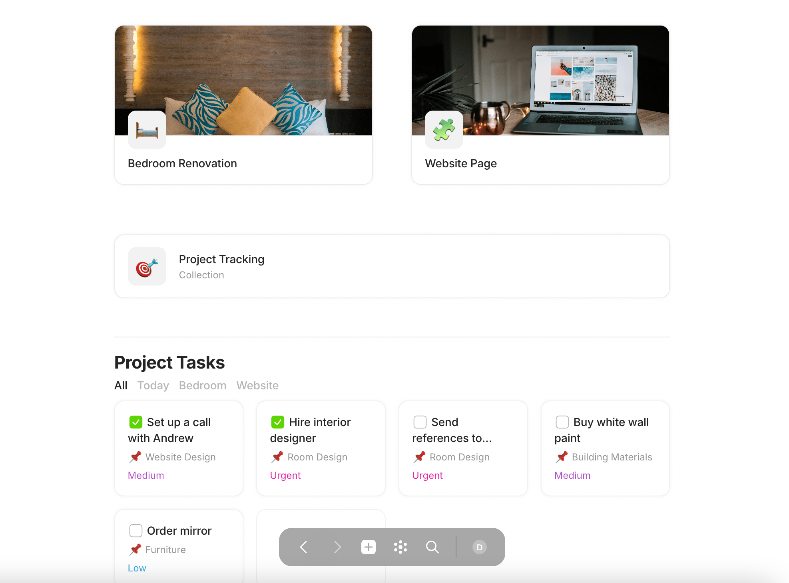
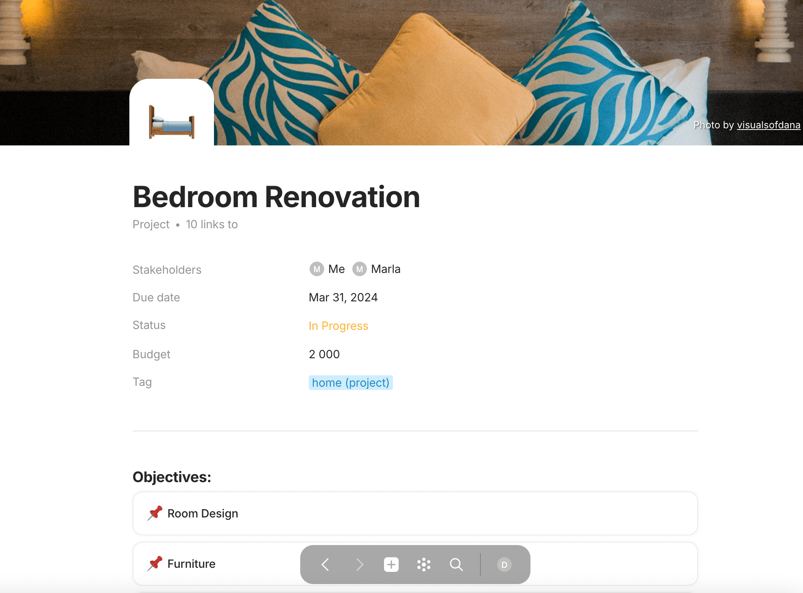
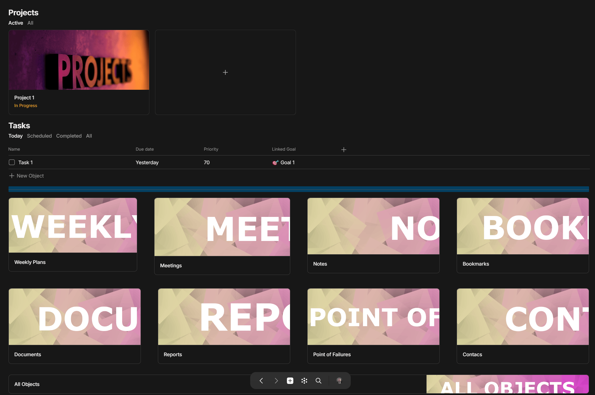
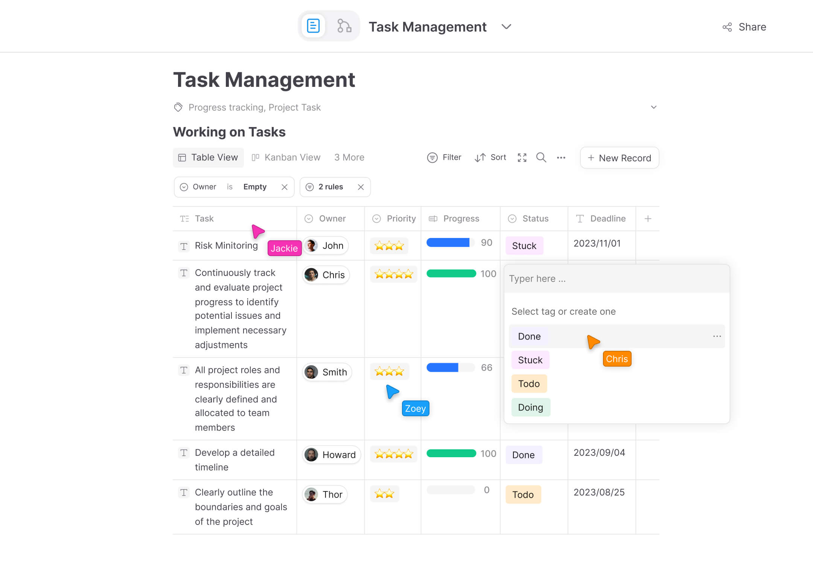
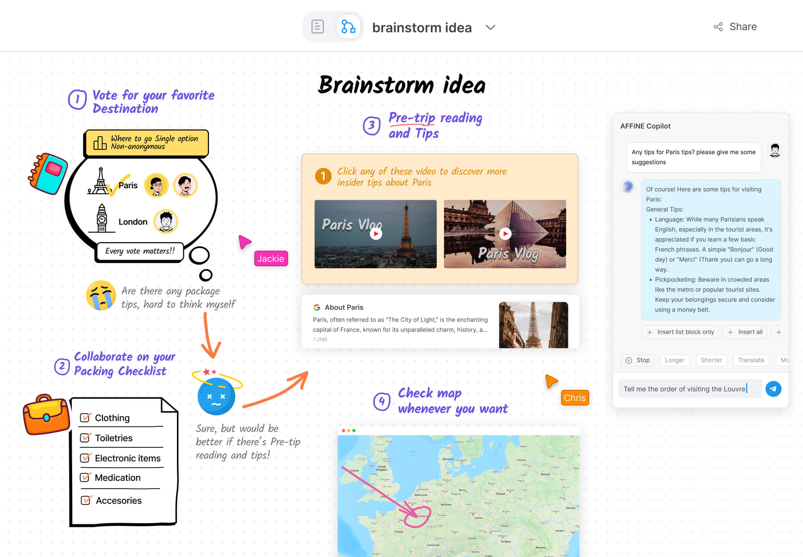

个人项目，不只是待办清单
第一轮的 Vikunja、Super Productivity、Kanboard 已排除。这轮换成更通用的项目空间：项目资料、说明、待办与进展怎样放在一起。以下是产品或模板原图，不是 AZCine 新设计；点击图片放大。
1. Notion：项目、待办、笔记和资料放在一个总页
这张图不是单一任务列表：左边能直接新增项目、任务、资料和笔记；右边看项目状态，下面汇集工作。可以借鉴“项目内容有共同入口”，不用照搬百分比、OKR 或装饰封面。


跟上一批哪里不同
一个项目不再等于一个待办列表，而是能够收纳文档、链接、工作记录的空间。任务只是其中一部分。
要留意
这个模板依然有项目卡片；如果你连这种入口也不喜欢，可以只借它的内容组织，不采用卡片。模板有商业销售入口，本轮没有购买或导入。
2. Milanote：像一张能放资料的项目桌面
项目说明、待办、参考图、文件和子项目板放在同一张板上。它不是按“待办／进行中／完成”排任务卡，而是按项目内容分区。这个方向可以和你现在用 PureRef 的方式对照，但不等于要求用它替代 PureRef。

再看一个影视项目资料板（同一种结构，不是制片系统）

跟上一批哪里不同
先把事情所需的内容收在项目里，不要求每份资料先变成一项任务。视觉参考和进度清单可以同时看。
要留意
自由摆放本身也会变乱，交付日期不能只写在便签里。即使借这个方向，正式节点仍须结构化；是否需要自由画布尚未确认。
3. Anytype：每个项目是一份可关联的档案
项目是独立页面，关联目标、工作记录和任务。可以看多项目总览，也可以进入某个项目回查。这里特意保留真实社区模板，不拿我们自己画的示意图冒充别人已经做好的产品。




看资料／笔记／周计划一起收纳的模板总页

跟上一批哪里不同
资料和工作可以关联到项目，不必塞进一条任务的附件里；偏“项目档案”，而不是纯打勾工具。
要留意
对象与关联需要理解成本。目标→任务层级只是这个模板的方案，不强制我们再加层级，也不能覆盖镜头独立交付节点。
AFFiNE：文档、表格与画布组合
如果仍优先看 GitHub，这类工作空间比上一轮纯任务软件覆盖得更广。下面是官网宣传中的局部界面，不是个人项目完整流程，图里的协作光标不代表我们需要协作。
展开查看文档表格与画布局部图




先看图，不急着选某个产品
你可以直接指出“这块接近”“这块不要”，或截个图圈一下。三种新的比较点是：一个总页管理项目内容、一个视觉板摆放项目资料、一个项目档案关联工作记录。不是再让你从几种待办软件里挑一个。